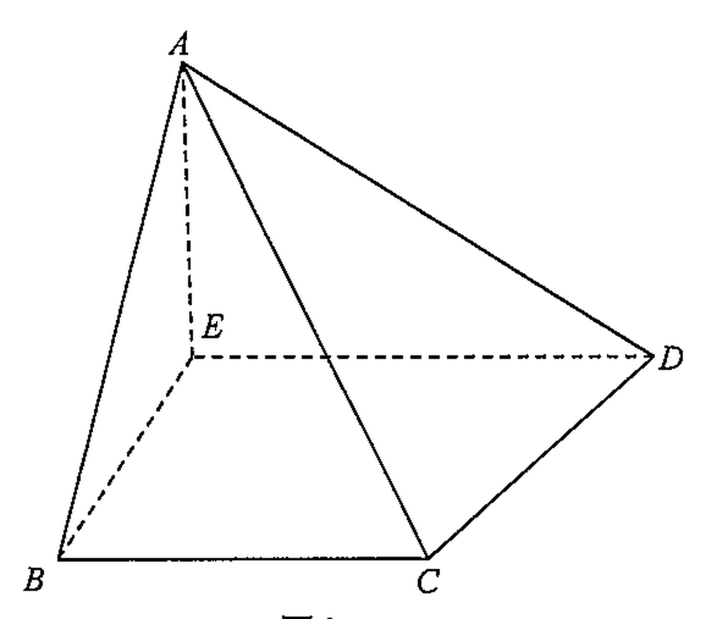
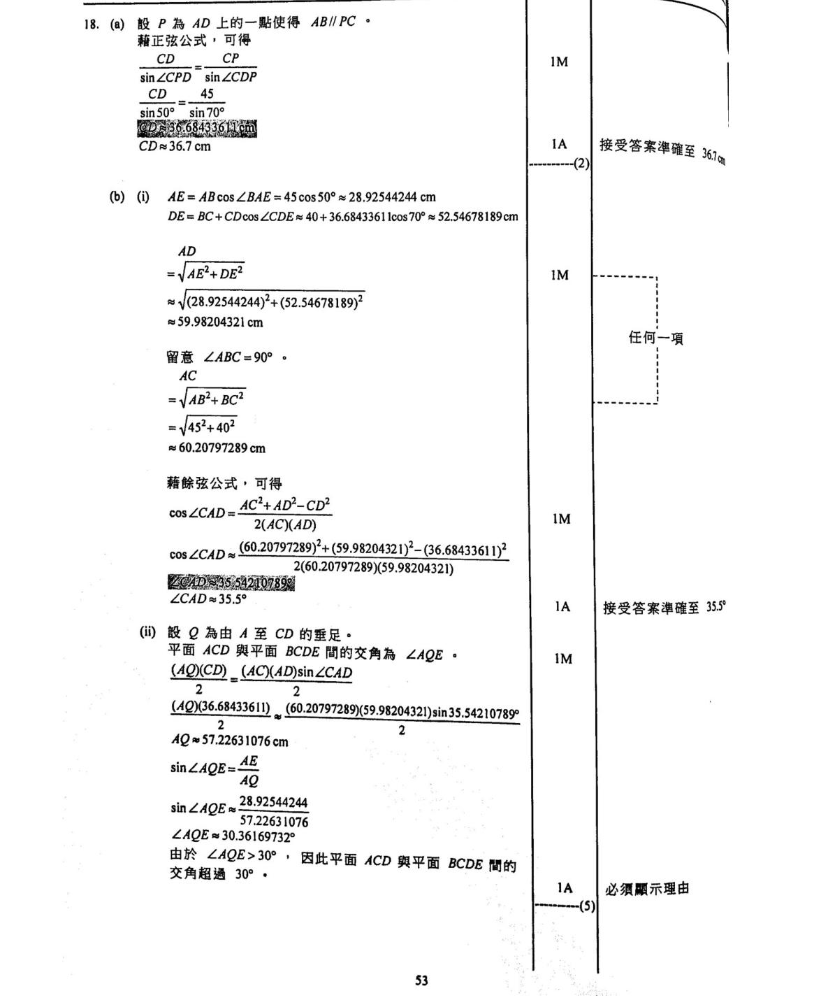

2021 DSE 數學 P1 Q18 答案＋詳解
題目（中文卷）
(a) 金屬薄片 $ABCD$ 的形狀為一梯形，其中 $AD//BC$ 。已知 $AB=45\text{ cm}$ 、 $\angle ADC=70^\circ$ 及 $\angle BAD=50^\circ$ 。求 $CD$ 。 (2 分)
(b) 現給定 (a) 中所描述的金屬片 $ABCD$ 。設 $E$ 為 $AD$ 上的一點使得 $BE$ 垂直於 $AD$ 。將該金屬片沿 $BE$ 摺起使得 $AE$ 垂直於平面 $BCDE$ 。將三塊三角形金屬薄片放置在這已摺起的金屬片成一角錐體（見圖 2）。得知 $BC=40\text{ cm}$ 。

(i) 求 $\angle CAD$ 。
(ii) 平面 $ACD$ 與平面 $BCDE$ 間的交角是否超過 $30^\circ$ ？試解釋你的答案。 (5 分)
English version（英文卷題目）
(a) A thin metal sheet (ABCD) is in the shape of a trapezium, where (AD \parallel BC). It is given that (AB = 45 \text{ cm}), (\angle ADC = 70^\circ) and (\angle BAD = 50^\circ). Find (CD). (2 marks)
(b) The metal sheet (ABCD) described in (a) is now given. Let (E) be a point lying on (AD) such that (BE) is perpendicular to (AD). The metal sheet is folded along (BE) such that (AE) is perpendicular to the plane (BCDE). Three thin triangular metal sheets are placed to this folded metal sheet to form a pyramid (see Figure 2). It is found that (BC = 40 \text{ cm}).

(i) Find (\angle CAD).
(ii) Does the angle between the plane (ACD) and the plane (BCDE) exceed (30^\circ)? Explain your answer. (5 marks)
官方評卷參考（Marking Scheme）

考評報告
平平。很多考生未能利用正弦公式求得CD的長度。甚差。大部分考生忽略了E為AD上的一點使得BE垂直於AD,因此他們未能求得∠CAD。甚差。超過90%考生未能正確地解釋為什麼平面ACD與平面BCDE間的交角超過30°。
相關課題
技能分析（呢題考咩、陷阱喺邊）
- 主課題
- 圓形幾何
- 相關課題
- 圓形幾何、求積法